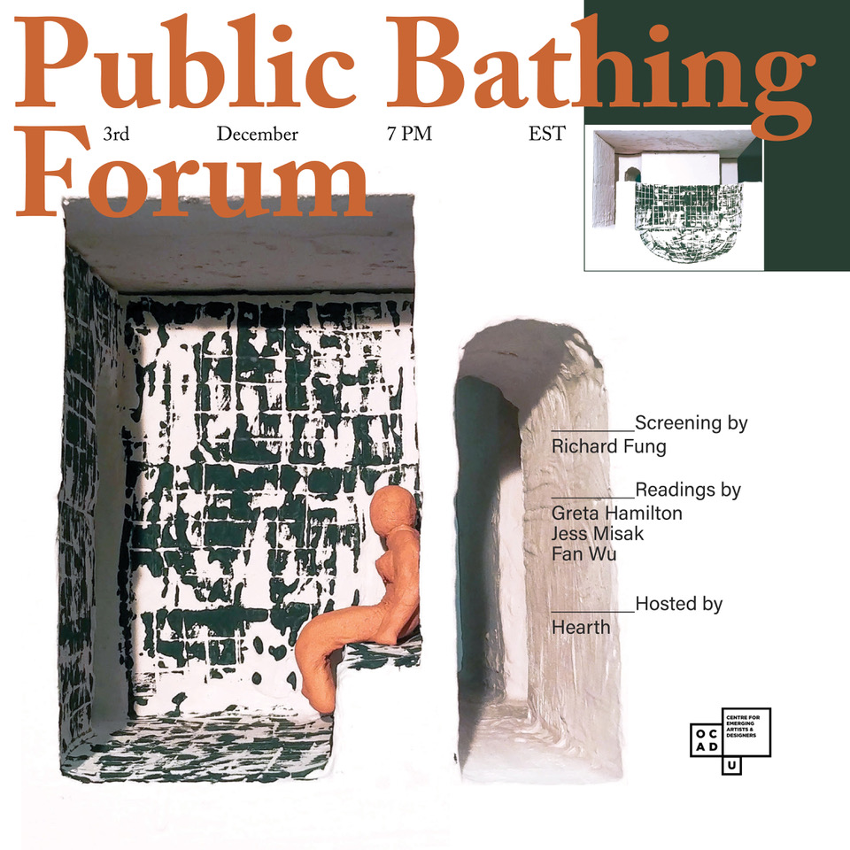

Public Bathing Forum
December 3, 2020
Hearth, along with Richard Fung, Greta Hamilton, Jess Misak and Fan Wu, invited community members to participate in a forum on public bathing. The forum included a screening of Steam Clean by Richard Fung (not present in recording), readings by Greta Hamilton, Jess Misak and Fan Wu, and a collective discussion period facilitated by the artists.
Documentation can be viewed here:
We offered this forum as an opportunity to think collectively about pleasure and social intimacies through queer, architectural, somatic, and sexual frameworks of public bathing. How do bathhouses shape our relation to each other? Our relation to strangers? How do public bathing sites cultivate intimacy in the architectures of our city? Does it feel urgent to create space for collective pleasure, rest, and reflection? What does that look like? How do the gestures of public bathing-cruising, washing, sleeping and meditating—translate to into a mode of interaction, a way of moving together as a community?
“No matter how many human beings are born to push plants and animals off the planet, we only permit touching strangers in a few locations: crowded subways, buses, airplanes. You do not touch a stranger at the checkout counter, unless it’s an accident, and then you apologize, sorry, say sorry. You cannot touch a stranger at the restaurant. You are not going to hold the strangers hand... But if you know them, a little, you can shake their hand Hello and all is well. If you are close friends you get a hug. If you are lovers you can taste and smell each other and this is a marvellous thing the world awaits.” CA Conrad from Unknown Duration of Fear, 2014
